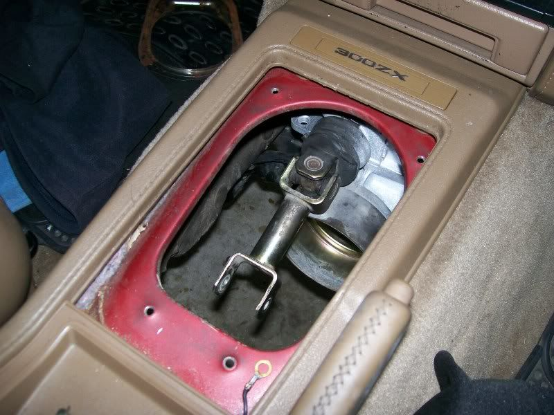
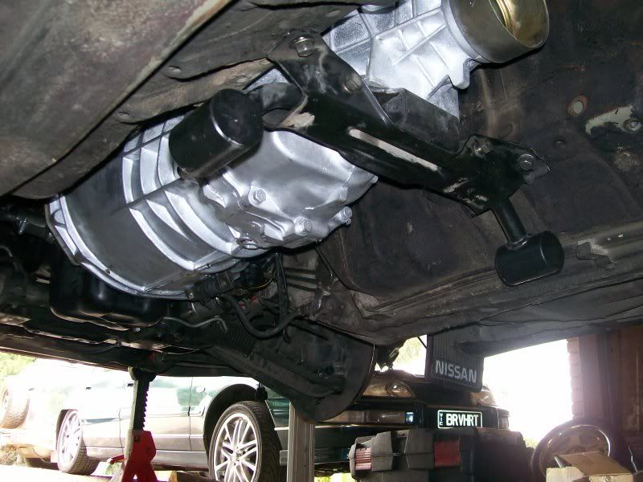

-
After messing around with z31starters, z31 flywheels and custom mounts I decided to swap the flywheel/starter setup..
As usual, I can't use the same parts as you guys. M30 is nowhere to be found and no-one can afford a z32 starter over here..
So. Maxima -90 Flywheel and maxima -90 starter, with z32 TT tranny it is.. All it takes is some love, and a hammer, cause the maxima-starter won't fit without a slight touch of violence to the chassie..
Maxima flywheel and z31 centerforce pressureplate was a hard time though.. it's doable, but you'll have to force the PP a bit to make the holes/bolts line up with the threads in the flywheel..
Anyways:
Maxima vg30 starter year: 89 - 91
Maxima vg30 flywheel year: 89 - 91
Z32 TT tranny
Works perfectly, after some violence.. :-)
http://Jocke.z31turbo.com 11.842s car
http://www.youtube.com/watch?v=UfRwqC3jkAk
If Nissan motorsports is Nismo, wouldn't Honda Motorsports be Homo? -
Just so people know for the speed sensor issues you can use the mechanical drive used in v6 pickups. Nissan part number 32702-02G17. peace."Its the s12's sexy over weight step daughter, the z31" -
z -
Got the gearbox finally!!
What i had to do was put the bellhousing from the z31 box on the z32 box and lengthen the tail shaft 120mm.Now just need to do a few little things and shes good to go!Using all z31 gear except the extension housing on the box.Straya, +61 -

Shifter sits right there on my 2+2.Setup im using is:
Z32 RS5R30A extension housing with Z31 FS5R30A bellhousing bolted on
Everything else is Z31 and bolted on beautiful.Only thing i need to work out is speedo wiring,reverse switch and shifter assembly.

Also, the driveshaft needs to be extended by 120mm because the output shaft is that much shorter.Straya, +61 -
why did you have to swap bell housings. I thought the z32 bell housing would bolt up to the vg30et block?86na2t + holset
feedback
viewtopic.php?f=18&t=6114&hilit=andrew+gardner -
It does but i cant easily find the right flywheel for that bellhousing to work.Straya, +61 -
Am I correct to assume the front case/"Bellhousing" between the Z31 30A and the Z32 30A are the same length? Just the tail end of the cases are different lengths?'87T -
Not sure if the bellhousings are the same length.Im guessing they are or else the input shafts would have to be a different length too.
The internals between FS5R30A and RS5R30A arent the same, the output shaft is shorter and the ratios are taller i think (more acceleration).
I dont think the Z32 tranny is any stronger either due to being the same design as the Z31 box..
Ive been driving now for around 700k's and its going pretty well.The shift is real notchy though compared to the old box.I put a Z32 short shifter in and modified the stock Z32 shifter bracket to make it sit in the middle.Kaned a few R32s and R33s and 350Z's..Haha,always funny coz they dont expect it.Straya, +61 -
Listen to this man. I have the same swap in my M30 with almost 2 years and over 20k miles on the swap. You can use a N/A z31 clutch kit as well.brewster240 wrote: i clearly said i used a maxima flywheel and m30 starter, how does that make you feel that you can use a z31 starter and flywheel?
go ahead and try to bolt this shit together.
please take pics when you do. dont drop anything on your head when it doesnt fit.
http://forums.f31club.com/phpBB3/vie…php?f=1&t=2262 -
Well here's some of the info that MachZ posted over on F31club.com to make the swap possible for the M30: http://forums.f31club.com/phpBB3/vie…php?f=1&t=2034
That revised 30A is expensive http://www.z1motorsports.com/product…oducts_id=1684
Might as well get a Getrag. -
That was the entire point, you can run a Z32 tranny in a Z31 by swapping the bellhousing from a Z31 30A to the Z32 Tranny, attaching the shifter bracket or making one yourself, and getting a longer drive shaft.ez22 wrote:
Seeing that Timbo_021 has already swapped his Z31 30A bellhousing with a rear Z32 case, you can reuse the Z31 clutch, flywheel, starter, etc, with swapping bellhousings. You still have to have the driveshaft lengthened and mount the remote shifter to the car.
You don't need an M30 starter, and Maxima fly wheel, you can do it with 100% stock Z31 parts minus the Z32 transmission and custom driveshaft. Which method is easier would depend on the person/resources they have at their disposal.
Now if my interpritation is all wrong, flame on :nanan?re1984 NA to T Digi-Dash, Morgan's Cam Gears @ -3, Team Green Air Filter, Top Mount Intercooler, Turbo XS Boost Controller, Greddy Type RS BOV, CM 3" Down Pipe, NGK Iridium Spark Plugs, and Maxima E-Fans.
1984 NA 2+2 - New Project Solid Axle Rear - Former Best 1/4 mile 13.452 @105.77mph. -
http://z31performance.com/forum/viewtopic.php?f=5&t=147 -
I dont know bout seals, i didnt do that part.I also dont think you can swap internals because the output shafts are different lengths and arent interchangeable..Straya, +61 -
So did any of you guys(using the maxima flywheel) have to shave down the tranny where the starter bolts up or did it work?
Edit- When I looked up maxima starters it appears they bolt on like the stock starter did not like the TT starter. I have the stock TT starter but will need to dent the chassis for it to work. I dont mind this but I would like to know if the tranny will require shaving. Did I look up the wrong maxima starter?

Copyright © 2006–. All rights reserved. Privacy Policy